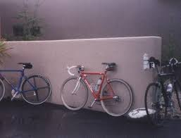
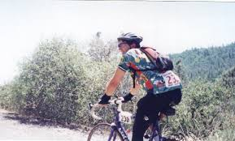
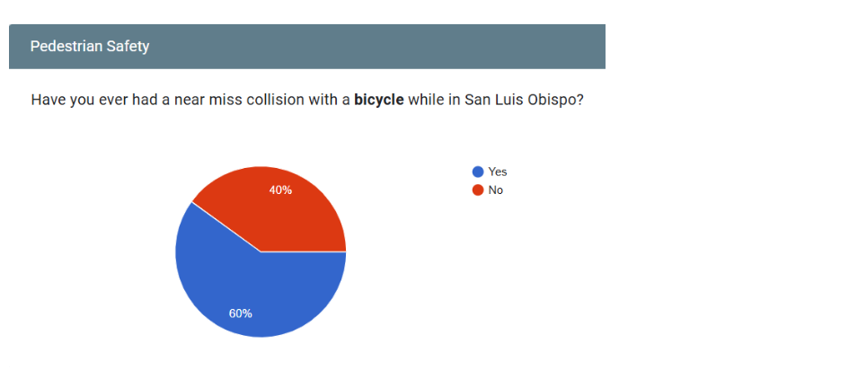
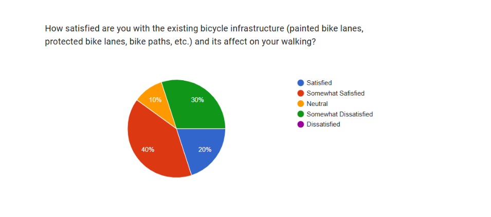
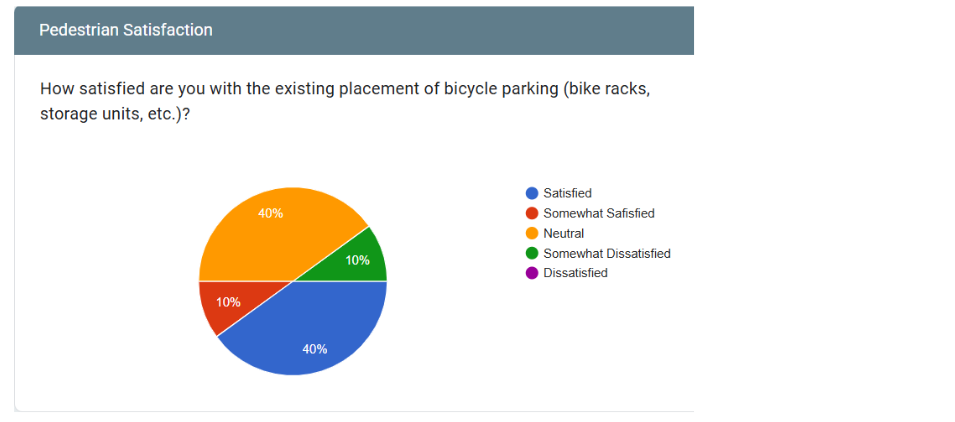
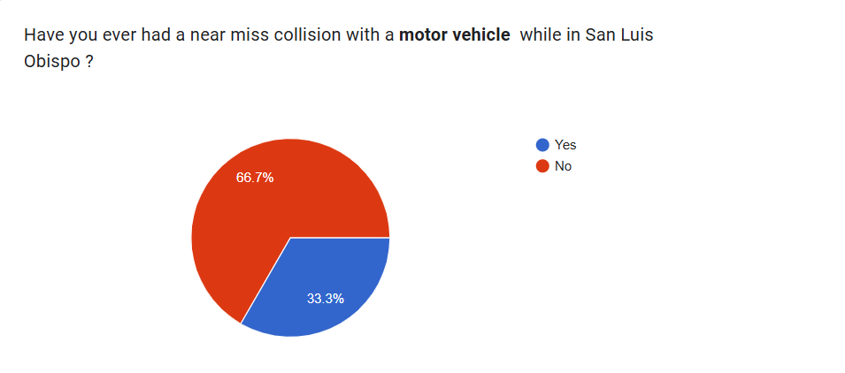

The Issue
Issue Overview
The main issue facing cyclists and pedestrians in San Luis Obispo is that the current infrastructure does not reflect how people actually move through the city and around the Cal Poly campus. Major commuting routes such as Highland Drive, California Boulevard, and Monterey Street see large volumes of commuting cyclists every day, yet these streets depend heavily on narrow painted bike lanes, placing riders directly beside moving traffic and parked cars, which increases the risk of sudden merges, dooring, and visibility problems. Without physical barriers or consistent separation, cyclists must constantly navigate unpredictable situations, increasing the likelihood of collisions and near misses.
On campus, crowded conditions magnify these safety concerns. High-traffic areas around Kennedy Library, Dexter Lawn, the University Union, and campus entrances funnel cyclists and pedestrians into a limited number of spaces. Pathways often lack clear markings or defined zones, so riders and walkers are forced to navigate space in ways that feel chaotic during busy class change periods, which can lead to many near-misses or minor collisions.
Conflicts between cyclists and motor vehicles also pose serious concerns. One third of surveyed cyclists reported experiencing a near miss with a vehicle in San Luis Obispo. These incidents occurred primarily on roads without bike lanes and at intersections or roundabouts, where riders are most exposed. In these locations, cyclists must compete for limited space with cars, which increases the risk of serious injury. Even in areas where bike lanes exist, limited separation and unclear markings leave cyclists uncertain about their position relative to traffic and motor vehicles, needing to hold precise lane position to avoid collision.
Social Justice & Equity
Beyond safety, the issue has a dimension of social justice. Bicycles are one of the most affordable and accessible methods of transportation available to students. With many students unable to afford the cost of a car, fuel, insurance, and parking permits, they depend heavily on bicycles to reach campus, jobs, and other intercity destinations. When bicycle infrastructure is inadequate or unsafe, lower income students face a disproportionate burden. They must navigate dangerous streets and crowded pathways not because they prefer to, but because they have limited alternatives.
Pedestrians also experience inequities tied to infrastructure design. Sharing walkways with bicycles puts pedestrians at a higher risk for collision. Not to mention students with disabilities or limited mobility may face even greater challenges in these areas, since sudden interactions with cyclists can make navigation extremely dangerous.
Overall, the findings show that the current infrastructure does not support the level of cycling and walking that defines daily movement in San Luis Obispo. Improving bicycle infrastructure would not only reduce collisions but also create a more equitable transportation environment. A network built on protected lanes, clear signage, and predictable crossings would provide safer travel for everyone while supporting the students and community members who rely on affordable and sustainable transportation (Pucher & Buehler, 2016; Krizec, 2007).
Analysis of the Issue
The San Luis Obispo (SLO) region is quite active and as a result sees high volume of bicycle traffic, especially in the case of students at the Cal Poly university located on its northern outskirts. Despite having many riders, the SLO region lacks widespread adoption of dedicated bike infrastructure. The current installations include painted bike lanes along roads and bike racks for storage. There are very few bike lanes with full separation from pedestrian or vehicular traffic (Class I bike lane), which can lead to many dangerous situations (Pucher & Buehler, 2016).
Survey and Results
In a questionnaire we conducted, 80% of all cyclists reported having one or more near collisions with pedestrians in the past 12 months and 60% of all pedestrians report near-miss incidents with bicycles. However, looking at crash reports for the district, these numbers seem quite high, as police reported crashes 50.9 per every 1,000 residents, or just 5 percent (Bike Crash Mapper, n.d.). While the two statistics aren’t directly comparable—crashes versus near misses—they provide insight into the number of instances that go unreported to the policymakers and civil engineers tasked with creating new bike infrastructure (Medury et al., 2019).
Near Miss Collisions with Motor Vehicles
One third of surveyed cyclists reported experiencing a near miss with a motor vehicle, most often on streets without bike lanes and at intersections or roundabouts (Medury et al., 2019).
Near Miss Collisions with Bicycles
For pedestrians, 60% reported at least one near-miss collision with a bicycle while walking in San Luis Obispo, highlighting that people on foot also carry a significant share of the risk (Medury et al., 2019).
In the survey, pedestrians believed that more painted bike lanes and stricter enforcement of bicycle-related traffic laws would remedy the number of dangerous situations they face. Cyclists offered a different perspective, favoring the creation of a bicycle highway system—a connected network of Class I bicycle lanes—to protect them from motor vehicles, along with railings and other separation features around existing bike lanes on campus (Pucher & Buehler, 2016).
A study conducted by the American Public Health Association affirms the cyclists’ view, stating that the reason for the low crash rate of cyclists in developed European nations is the presence of “on-road bicycle lanes and off-road bicycle paths, often including priority traffic signals and advance stop lines for cyclists at intersections” (Pucher & Buehler, 2016).
Perceptions of Infrastructure & Enforcement
Examining pedestrians’ suggestions—stricter law enforcement and more painted bike lanes—studies have found these approaches less effective and not worth the manpower required (International Police Mountain Bike Association, n.d.).
Cost of Enforcement vs. Infrastructure
Interviews with law enforcement agencies by the International Police Mountain Bike Association note that hiring and training new officers to focus on bicycle laws would likely cost hundreds of thousands, if not millions, of dollars each year, whereas infrastructure is a one-time investment (International Police Mountain Bike Association, n.d.).
To hire even five police officers on a rotating schedule would require upwards of $300,000 per year, excluding the cost of new training programs, instructor pay, facilities, and equipment (ZipRecruiter, n.d.). Because enforcement is an annually renewing expense while infrastructure is a long-term asset, the remainder of this project focuses on the creation of better bicycle facilities rather than expanding enforcement (Krizec, 2007; Pucher & Buehler, 2016).
Word count: 1,076